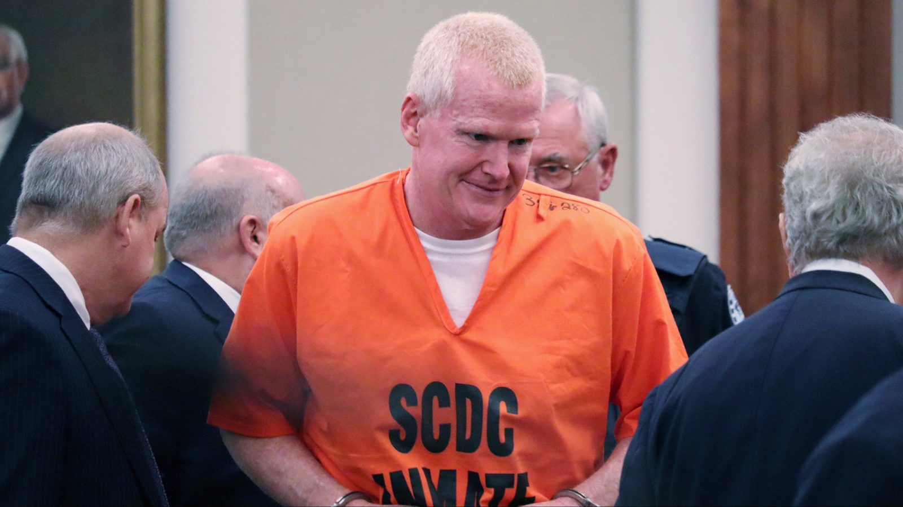

Investigation · Updated November 23, 2026
Every count he admitted, every sentence he is serving, and the murder case South Carolina gets to try all over again in April. With links to the filings.

I went looking for the jail calls and fell straight down the hole. Every round of indictments, every plea sheet, every sentencing memo. The man stole from a dead housekeeper's sons, a highway patrolman hurt on the job, the estates of the dead, and his own family's law firm and he kept it up for more than a decade.
The state charged him 101 times for the money alone. He pleaded to 22 of them. The feds got him on 22 more.
And in May, the murder convictions went in the trash because the clerk of court wanted to sell a book.
So I built the ledger. All of it in one place, sourced to the paper, with the files linked so you can check me.
On Nov. 13 the defense asked McCaslin to toss the original murder indictments, arguing lead SLED agent David Owen misled the grand jury about blood on Murdaugh's shirt. Prosecutors called it a single mistake, not bad faith. She promised a written ruling, and the latest reports say she denied it [7][8]. Even a win would not have bought him much: prosecutors could simply go back to a grand jury [7]. The next pretrial hearing is Jan. 20 in Sumter County [4].
Also live: on Nov. 17 McCaslin ordered sealed records from the first trial released, including the Juror 785 transcripts and the investigation into the clerk. The State has until Nov. 30 to finish redactions, and audio and video may take longer [9].
Meanwhile the defense won outside DNA testing on material from under Maggie Murdaugh's fingernails, and lost the fight to keep his own 2023 testimony out of the retrial [10].
The charges came in waves. A State Grand Jury dropped 27 charges in November 2021 alone, covering about $5 million across five counties [11]. By mid 2022 he was facing 71 charges in 15 indictments [12]. Another nine landed in August 2022 for stealing roughly $420,000 from the family firm [13]. The tax evasion indictment in April 2023 brought the total to 101 [14].
On Nov. 17, 2023 he pleaded guilty to 22 of them, picked by prosecutors to cover each victim and each kind of crime, in exchange for 27 years [15][16]. The deal resolved all 101 [17]. Prosecutor Creighton Waters said it was likely the longest white collar sentence in state history [16].
| Charge he pleaded guilty to | Counts | Max each |
|---|---|---|
| Money laundering | 7 | 20 years |
| Breach of trust with fraudulent intent, $10,000 or more | 6 | 10 years |
| Obtaining signature or property by false pretenses, $10,000 or more | 4 | 10 years |
| Breach of trust with fraudulent intent, $2,000 to $10,000 | 1 | 5 years |
| Forgery, $10,000 or more | 1 | 10 years |
| Computer crimes, $10,000 or more | 1 | 10 years |
| Criminal conspiracy (tied to the narcotics distribution case) | 1 | 5 years |
| Willful attempt to evade or defeat a tax, $10,000 or more | 1 | 5 years |
| Total | 22 |
Breakdown from the plea terms as reported by The State [18]. The 79 charges he did not plead to were dismissed under the deal. The full 101 count list lives in the State Grand Jury indictments; see Records and filings below.
The plea covered 18 victims [19]. The named ones in the indictments and plea coverage include the estate of Gloria Satterfield, the Murdaughs' longtime housekeeper; the estate of Hakeem Pinckney, whose $309,581 settlement prosecutors say he drained [20]; Natarsha Thomas, whose $325,000 settlement prosecutors say he flipped into a money order for a relative [21]; Thomas Moore; the Badger family; a highway patrolman injured in the line of duty [11]; and the law firm his great grandfather founded. The tax counts allege $9,067,706 in unreported income and $619,391 in state tax dodged [14].
He pleaded guilty to 22 federal crimes in September 2023. On April 1, 2024, U.S. District Judge Richard Gergel gave him 40 years, nearly double the 17.5 to 22 years prosecutors had asked for after saying he failed a polygraph and breached the plea agreement [5][22].
| Scheme | Years | Counts |
|---|---|---|
| Settlement checks made out to "Palmetto State Bank" and handed to banker Russell Laffitte | 2011 to 2021 | Conspiracy to commit wire and bank fraud (1), bank fraud (1), wire fraud (2) |
| The fake "Forge" account, a bogus company account in his own name used to launder client settlements | 2017 to 2021 | Wire fraud (3), money laundering (14) |
| The Satterfield insurance money, steered through attorney Cory Fleming. $3,483,431.95 went into "Forge." The estate got nothing. | 2018 to 2020 | Conspiracy to commit wire fraud (1) |
| Wider diversion of client and firm money: fake fees, fake annuities, invented expenses | 2005 to 2021 | Described in the plea; no separate counts assigned |
Figures from the U.S. Attorney's Office sentencing release [5].
On June 7, 2021, Maggie Murdaugh, 52, and Paul Murdaugh, 22, were shot to death near the dog kennels at Moselle, the family's hunting property in Colleton County. Alex called 911 at 10:07 that night [23].
The State's theory: he killed them to buy sympathy and time while his thefts were about to come out [7]. In March 2023 a Colleton County jury convicted him on two counts of murder and two weapons counts, and Judge Clifton Newman gave him two life sentences without parole.
In January 2024 retired Chief Justice Jean Toal denied him a new trial after hearing from jurors and the clerk [24]. The S.C. Supreme Court heard his appeal Feb. 11, 2026 and reversed on May 13. Unanimous. The justices found the clerk's improper outside influence on the jury so egregious the State could not rebut the presumption of prejudice [1]. They also took up whether the jury should ever have heard so much about the financial crimes, while saying they did not need to decide it [25].
Today he is legally presumed innocent of the murders. He is still serving 40 years on the money cases either way.
Becky Hill ran the courtroom, the exhibits and the jury. Jurors said she told them to watch his body language when he testified and not to be fooled by him [26]. She was writing a book about the trial at the time [27].
On Dec. 8, 2025 she pleaded guilty to four state charges: obstruction of justice and perjury for showing sealed crime scene photos to a photographer and then lying about it to Toal under oath, plus two counts of misconduct in office for pocketing more than $11,000 in bonuses and using her office to push the book [28][29]. Judge Heath Taylor gave her three years of probation and 100 hours of community service [29].
No prison. She was never charged with jury tampering.
WCIV obtained SLED's full case file on her through FOIA and published it in parts [30]. Murdaugh has since sued her [31].
Former Palmetto State Bank CEO. Convicted on six federal counts in November 2022 and sentenced to seven years [5]. The Fourth Circuit vacated it in November 2024 over the judge's removal of a deliberating juror [32]. In April 2025 he pleaded guilty to the same six charges, with an agreed sentence of five years [33].
The lawyer Murdaugh steered the Satterfield estate to. Pleaded guilty to federal conspiracy and got 46 months in August 2023 [5].
Arrested after the Sept. 4, 2021 roadside shooting. SLED says Murdaugh asked him to shoot him in the head so Buster could collect about $10 million in life insurance [34][35]. Smith was charged with assisted suicide, assault and battery of a high and aggravated nature, pointing and presenting a firearm, insurance fraud and conspiracy. He denies the scheme and was still awaiting trial as of this fall's reporting [36].
Gloria Satterfield died in 2018 after a fall at the family home, and her sons were robbed of the insurance money that followed [5]. Mallory Beach, 19, died in the February 2019 boat crash; Paul was charged and the case ended with his death. Stephen Smith, 19, was found dead on a Hampton County road in 2015. SLED reopened his case in June 2021 based on information from the double murder investigation [37], and it was reclassified as a homicide in 2023 [38]. No one has been charged. Buster Murdaugh has publicly denied any involvement and has sued over documentaries tying him to it [38].
The primary paper first. Court records, charging documents, FOIA productions, and the reporting that tells you where a release lives when the release itself is paywalled or partial. A heads up: some of these are mirrors, some need an account, and some docket entries are still sealed.
On the jail calls: Richland County released 121 recordings covering October 2021 to March 2022 [42]. Colleton County released 28 calls from the trial period to Hidden True Crime in 2023, one of them a privileged call with Jim Griffin that the sheriff called human error [43].
I am saying Alex Murdaugh is a convicted thief. He admitted it under oath in two courts, and those convictions stand.
I am not saying he has been convicted of killing Maggie and Paul. That verdict is gone. He will be tried again, and until a new jury rules he is presumed innocent of the murders.
I am not saying anyone in the Murdaugh family had anything to do with Stephen Smith's death. No one has been charged. The case is open.
Curtis Smith's charges are accusations. He denies them.
Sourcing notes: Court documents and government releases are cited first where they exist. News reports carry the rest. The Mallory Beach details come from the boat crash records linked under Records and filings. The ruling on the motion to dismiss is reported but I have not yet seen the written order; I'll swap in the order itself once it posts. Photo: AP Photo/James Pollard.
Stay feral.